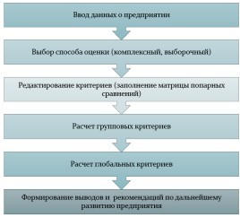

Бишаров Д.А., Матях И.В., Савкова Е.О. Разработка системы поддержки принятия решений для оценки уровня социально-экономического развития предприятия в условиях интернет-провайдера. В статье проведен анализ методов решения задачи и выбраны наиболее оптимальные методы для рассматриваемой системы. Предложен алгоритм работы системы поддержки принятия решений для комплексной оценки социально-экономического развития предприятия в условиях интернет-провайдера.
система поддержки принятия решений, интернет-провайдер, показатели развития предприятия, методы решения многокритериальных задач.
Bisharov D.A., Matyakh I.V., Savkova E.O.
«Donetsk National Technical University», Donetsk, Russian Federation
Bisharov D.A., Matyakh I.V., Savkova E.O. Development of a decision support system for assessing the level of socio-economic development of an enterprise in an Internet provider environment. The article proposes an algorithm for developing a decision support system for a comprehensive assessment of the socio-economic development of an enterprise in an Internet provider environment. The methods of solving the problem are investigated and the most optimal methods for the system under consideration are selected.
decision support system, Internet service provider, enterprise development indicators, methods for solving multi-criteria tasks.
Основной целью создания любого предприятия является максимизация прибыли через реализацию производимой продукции (работ, услуг), что позволяет удовлетворять социально-экономические потребности как сотрудников, так и собственников бизнеса. В связи с этим можно сказать, что для устойчивого развития предприятия необходимо понимать ключевые механизмы и закономерности его функционирования, а также регулярно анализировать деятельность для выявления и диагностики проблем.
На сегодняшний день существует множество систем для комплексного анализа предприятий. Но большинство из них:
Актуальность разработки новой системы обусловлена необходимостью:
Следовательно, разработка системы, которая позволит проводить анализ по выбранным критериям и оценить состояние предприятия на текущий момент, является актуальной задачей в современных бизнес-реалиях.
Цель статьи – сформировать систему показателей, определить тип задачи, определить методы для оценки уровня социально-экономического развития предприятия, разработать алгоритм для оценки деятельности предприятия.
Социально-экономическое развитие предприятия представляет собой динамический процесс, включающий количественные и качественные изменения. В работе [1] проанализированы основные составляющие деятельности предприятия и предложено разбиение показателей на группы (критерии), представленные в таблице 1.
| Критерий | Название группы |
|---|---|
| С1 | Группа показателей эффективности работы предприятия |
| С2 | Группа показателей инновационной деятельности |
| С3 | Группа показателей использования оборотных средств |
| С4 | Группа показателей рентабельности |
| С5 | Группа показателей охраны труда |
| С6 | Группа показателей организации труда |
| С7 | Группа показателей образования работников |
| С8 | Группа экологических показателей |
При этом каждый групповой критерий характеризуется рядом частных критериев. Например, групповой критерий «Эффективность работы предприятия» можно оценить с помощью совокупности следующих переменных: прибыль, рентабельность, качество реализуемой продукции; группа показателей охраны труда характеризуется такими показателями как оплата труда, численность работников, уровень травматизма и т.д.
Роль переменных неодинакова, поэтому для оценки их влияния на групповой критерий необходимо использовать весовые коэффициенты значимости, которые, в большинстве случаев, устанавливаются экспертами (профессионалами) в данной области. Тогда, связь критерия с переменными можно представить следующей формулой 1:
Сi = ∑j=1n aij × xj
(1)
где n – число переменных (j=1,…,n);
aij – весовой коэффициент значимости переменной.
Таким образом, определяем значения всех выбранных групповых критериев.
Для устранения многокритериальности в данной задаче объединим все выбранные критерии в один глобальный, для получения оценки деятельности предприятия [2]. Так как влияние групповых критериев на общую оценку различно, необходимо также использовать весовые коэффициенты значимости.
Тогда, глобальный критерий вычисляем по формуле (2):
Сгл = ∑i=1N Wi × Ci
(2)
где Ci - частные критерии (i=1,…,N);
Wi - веса (коэффициенты важности) критериев.
При этом:
0 ≤ wi ≤ 1; (3)
∑i=1N wi = 1
Можно заметить, что процесс определения частного критерия полностью совпадает с определением глобального критерия.
Следовательно, процесс оценки предприятия можно разделить на несколько этапов:
Для разработки алгоритма оценки уровня социально-экономического развития предприятия очень важно определить тип решаемой задачи. Рассматриваемую задачу можно решить с помощью методов принятия решений.
Любой процесс принятия решения включает следующие элементы [3]:
В работе [4] определено множество внешних факторов, которые могут повлиять на исход решения данной задачи. Приведем основные из них в таблице 2.
| Внешние факторы | Погодные условия | Сбой оборудования клиента | Сбой работы оборудования провайдера | Количество абонентов |
|---|---|---|---|---|
| Q1 | благоприятные | не произошел | не произошел | много |
| Q2 | благоприятные | не произошел | не произошел | среднее количество |
| Q3 | благоприятные | не произошел | не произошел | мало |
| Q4 | благоприятные | произошел | не произошел | много |
| Q5 | благоприятные | не произошел | произошел | много |
5. Исходы решений – возможные варианты результатов принятия решений. В большинстве практических задач принятия решения исходы оцениваются не по одному, а по нескольким критериям, то есть решение задачи сводится к поиску лучшей альтернативы по нескольким критериям.
Для данной задачи можно определить следующее множество критериев {Ck, k = 1, p}:
Следовательно, задачу оценки деятельности предприятия можно назвать задачей многокритериальной оптимизации.
В зависимости от условий влияния внешней среды и информированности ЛПР, имеется следующая классификация задач принятия решений:
В данной задаче учитываются внешние факторы, но нет данных о распределении вероятностей. Следовательно, задача оценки уровня социально-экономического развития предприятия является многокритериальной задачей в условиях неопределенности.
Решение многокритериальной задачи сводится к нахождению альтернативы, при которой достигаются наиболее приемлемые значения по всем критериям. В процессе решения ЛПР получает оценку каждой альтернативы и соответственно, наилучшую альтернативу из предложенных. В данной работе рассмотрим ситуацию, при которой на исход решения влияет один случайный фактор (внешняя среда).
Система оценивает каждую выбранную группу критериев и формирует рекомендации по дальнейшему развитию индивидуально для каждого предприятия. На точность формирование выводов и рекомендаций влияет расстановка коэффициентов значимости [5], как для переменных, так и для частных критериев. Следовательно, возникает потребность в объективной оценке важности критериев. Для этого необходимо выполнить анализ способов определения весовых коэффициентов значимости и их влияния на принятие решения.
В работе [6] рассмотрены следующие методы решения задачи для системы оценки уровня социально-экономического развития предприятия:
В результате исследования данных методов выбраны следующие методы для рассматриваемой системы:
1. Для определения весовых коэффициентов значимости выбран метод анализа иерархий, так как он имеет ряд преимуществ:
2. Для определения значений групповых критериев выбран метод аддитивной свертки. Данный метод выбран для устранения многокритериальности задачи и получения четкого результата в виде единственного значения для каждого группового критерия.
3. Для выбора наилучшей альтернативы – метод целевого программирования. Данный метод выбран, потому что:
После определения показателей деятельности предприятия, определив тип решаемой задачи и методы решения предложен следующий алгоритм решения задачи, представленный на рисунке 1.

На основе изучения общих принципов экономической и социальной деятельности предприятия сформирована система показателей, которая предназначена для оценки уровня развития предприятия.
Определен тип решаемой задачи и методы решения:
Разработан алгоритм анализа системы показателей, в результате использования которого можно определить значения групповых критериев оценки и глобального критерия.